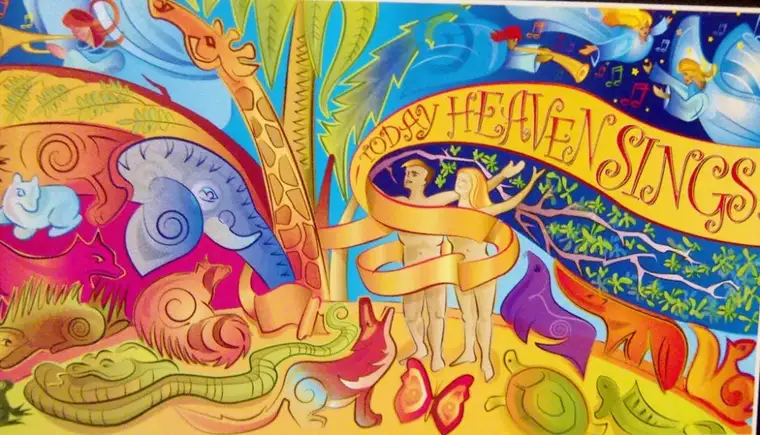
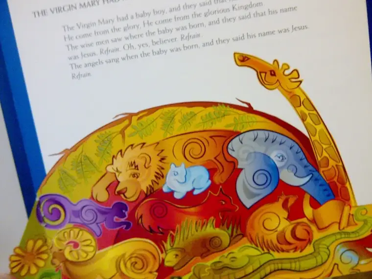
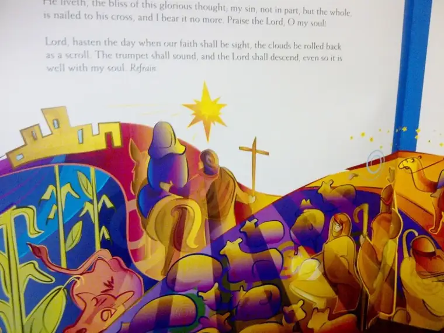

 |
| Snippet of mural backdrop for 2011 Concordia College Christmas Concert |
{kind=link}
So off I went to take in this breathtaking event for the second year in a row. It was one more occasion to help prepare my heart for the joyous season that awaits.
 |
| Depiction of The Peaceable Kingdom by mural artist Paul Johnson |
{kind=link}
 |
| Artist Paul Johnson’s rendition of the journey to Bethlehem |
{kind=link}
These glimpses of the program are all I can share with you of my afternoon, since photography wasn’t permitted of the concert itself. At the very least, you can glean from these images the whimsical feel the artist who painted the background mural was going for.
I could gush for the rest of the post about the five choirs, orchestra, three conductors and two narrators who overwhelmed me (in a very good way) to the point of tears with this presentation. But such a post would be unfair. One, I can’t do it justice, and two, another related matter has come to my attention that seems more worthy of my purposes here.
The gist of the issue: perspective, and how it can differ from one person to the next. When I was younger, I loved mushrooms (as I do to this day). I found them to be juicy and succulent. My sister, on the other hand, deemed them slimy and bland. Same food item, different perspective.
So back again to Advent. A family friend attended the very same concert as my MIL, her friend and I, but his reaction contrasted my own. Though he did call it a thrilling event, he added that it likely was not the kind of birthday gift Christ would most appreciate. I’m guessing he found it too lavish for Jesus’ tastes.
Similarly, I’d shared my Advent post from last week with this same person, and rather than ingesting what I had tried to convey through my post — the simplicity and beauty of the Advent season — he remarked in an email that he was “disappointed” in the post and said that from what I shared, it looked to be a very “posh” celebration focusing on “the good life with abundant food, exquisite table settings and family joys.” He added that the overemphasis on one’s immediate family does not honor the Gospel of Jesus Christ since his own family connects were overshadowed by concern for the suffering humanity.
As I chewed on how to respond, I realized my thoughts might be worthy to share with you readers today.
Firstly, he didn’t attend any of the events I wrote about so was at a disadvantage. But if the intent of my post was missed, I think it’s important to clarify.
What moved me most about all of these events were the very things he thought were missing: simplicity, beauty, humility, hope, love, and joy at the thought of Christ coming into our world and what that would mean. I don’t know what could get more humble and beautiful at this time of year than tiny dancers and singers gracing the altar and space of a church called Nativity.
As for the other two events put on by the Mothers and Children groups, perhaps the desserts and table settings seemed posh to the outsider, but let me assure you, the perceived “extravagance” was only a ruse — an excuse for us to get together in order that we might return to a mindset of simplicity. I can’t imagine that gathering to listen to Advent reflections and songs focusing on the most profound and humble of stories — the Annunciation — in order to ponder the coming of the Christ child in our own hearts could offend God.
A few more bullet points to consider:
* Women have a natural propensity for serving others. In the right circumstances, our hearts dance to be able to do for others. Yes, it’s a sacrifice to prepare a table and bring to it our special flair and beauty. It’s a sacrifice to stay up to the wee hours of the night baking a cake that was looking to come out all wrong, as my table host and busy mother of two confessed. But the end result and how it filled our hearts with hope was worth it.
* As such, we need to fill back up if we’re to do the giving we truly want to do. Just as we’re inclined to serve, so are we inclined to give away too much of ourselves. Most every woman I know is guilty as charged. The Advent events put on by the mothers gave those invited a chance to be rejuvenated in order to give more with joy.
* I’m concerned by the thought that paying attention to our families first and foremost might be seen as a negative. If we don’t focus first on our families and building up the future generation, we are in a boatload of trouble. Thank God there are families who turn inward first so that their children can grow up to be healthy adults; adults who learned first through their nuclear families how to be generous. Mother Teresa espoused the idea that we cannot do great things, only things with great love, and that serving the needy in our midst — oftentimes those right in front of us — is where we must begin. What would happen if all the mothers in the world got up and left their homes right now, abandoned their families, in order to feed the poor when their own children are hungry — not only for food but spiritual nourishment? What if women quit having children because they were too consumed with helping others? The world would cease to exist.
Q4U: What will you do for and with your family this Advent and Christmas season to fill up enough to go out and share what Christ came to teach us?